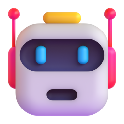

@laz.creator01 / 07
Нейросетьпомнитотебебольше,чемтыдумаешь

листай

Твою роль, проекты, людей, стиль общения и технические предпочтения. На Free, Pro и Max память включена сразу.

Pause: старое остаётся, новое не запоминается. Reset удаляет всё без возврата. У каждого проекта своя память.

Он хранит сохранённые воспоминания и подтягивает прошлые чаты. Всё это видно и удаляется в настройках памяти.

В Claude такие чаты не сохраняются и не попадают в поиск по прошлым чатам.